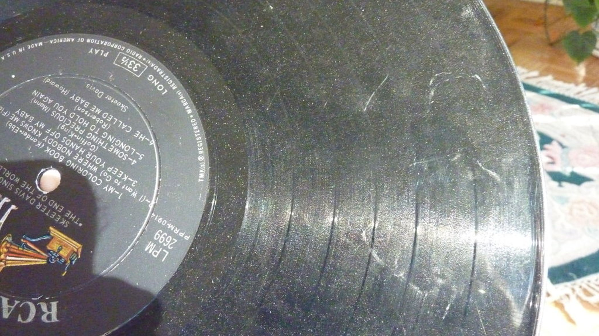
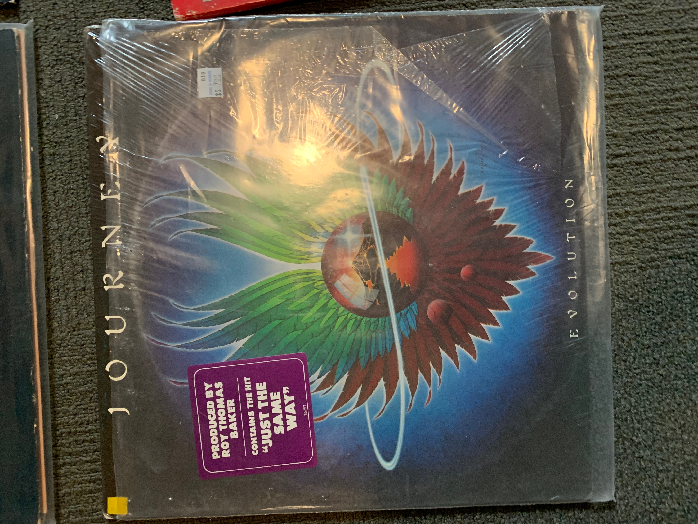
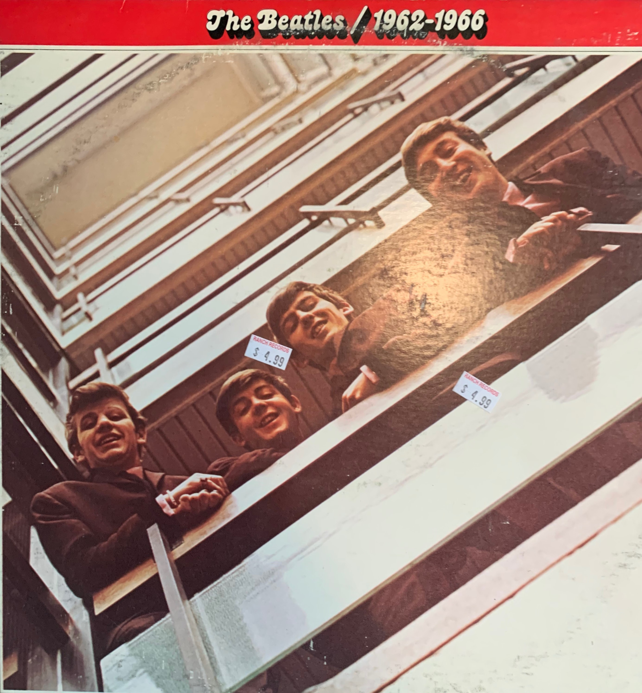

<doctype.!DOCTYPE html>
<html>
<head>
	<title>Vinyl Collection</title>

<style type="text/css">

body {
	background: brown;
}

body {
  display: flex;
  justify-content: center;
  align-items: center;
  min-height: 100vh;
  background-color: brown;
  color: white;
}

.muzieknootjes {
  display: block;
  margin: auto;
  position: relative;
  width: 50%;
  min-width: 300px;
  height: 200px;
  border: 0px solid #000;
}

.noot-1,
.noot-2,
.noot-3,
.noot-4 {
  position: absolute;
  animation: notes 2s infinite linear;
  font-size: 35px;
  opacity: 0;
}

.noot-1 {
  top: -50px;
  left: -400;
  animation-delay: 0.5s;
}

.noot-2 {
  top: -30px;
  left: -100%;
  animation-delay: 1s;
}

.noot-3 {
  top: -10px;
  left: -60%;
  animation-delay: 1.5s;
}

.noot-4 {
  top: 0px;
  left: -170%;
  animation-delay: 2s;
}

@keyframes notes {
  0% {
    transform: scale(1) translate(0, 0);
    opacity: 0;
  }
  50% {
    opacity: 1;
    transform: scale(1.5) translate(50%, -50%);
  }
  80% {
    opacity: 0;
    transform: scale(1.5) translate(100%, -100%);
  }
  100% {
    transform: scale(1.5) translate(100%, -100%);
    opacity: 0;
  }
}


.record1{
	position: fixed;
	margin-top: 300px;
	margin-left: 50px;
	transform: rotate(20deg);
}

.record2{
	position: fixed;
	margin-left: 500px;
	transform: rotate(-30deg);
}

.record3{
	position: fixed;
	margin-left: 1000px;
	margin-top: 500px;
	transform: rotate(90deg);
}

.record4{
	position: fixed;
	margin-left: 100px;
	margin-top: 50px;
}

.record5{
	position: fixed;
	margin-top: 400px;
	margin-left: 600px;
	transform: rotate(40deg);
}

.record6{
	margin-left: 800px;
	margin-top: 50px;
	position: fixed;
	transform: rotate(10deg);
}

.record7{
	position: fixed;
	margin-left: 300px;
	margin-top: 500px;
	transform: rotate(-15deg);
}

.record8{
	position: fixed;
	margin-top: 10px;
	margin-left: 1000px;
	transform: rotate(40deg);
}

.record9{
	position: fixed;
	margin-top: 200px;
	margin-left: 800px;
	transform: rotate(90deg);
}

.record10{
	position: fixed;
	margin-left: 250px;
	margin-top: 200px;
}

.record11{
	position: fixed;
	margin-left:1100px;
	margin-top:170px;
}

.record12{
	position: fixed;
	margin-top: 60px;
	margin-left: -100px;
	transform: rotate(40deg);
}

.record13{
	position: fixed;
	margin-left: 500px;
	margin-top: 200px;
	transform: rotate(90deg);
}

.record14{
	position: fixed;
	margin-top: 350px;
	margin-left: 800px;
	transform: rotate(-15deg);
}

.record15{
	position: fixed;
	margin-left: 10px;
	margin-top: 450px;
	transform: rotate(90deg);
}

.record16{
  	position: fixed;
  	margin-left: 450px;
  	margin-top: 80px;
}

.note{
	position: fixed;
	margin-top: -210px;
	margin-left: -490px;
  	animation: fadeIn ease 1s;
  	-webkit-animation: fadeIn ease 2s;
  	
}
@keyframes fadeIn {
  from{opacity: 0}
  to{opacity: 1}
  }
}


</style>
</head>

<body>










<a href="music.html">

</a>

<div class="muzieknootjes">
  <div class="noot-1">
  &#9835; &#9833;
</div>
<div class="noot-2">
  &#9833;
</div>
<div class="noot-3">
  &#9839; &#9834;
</div>
<div class="noot-4">
  &#9834;
</div>
</div>
</body>


</html>

